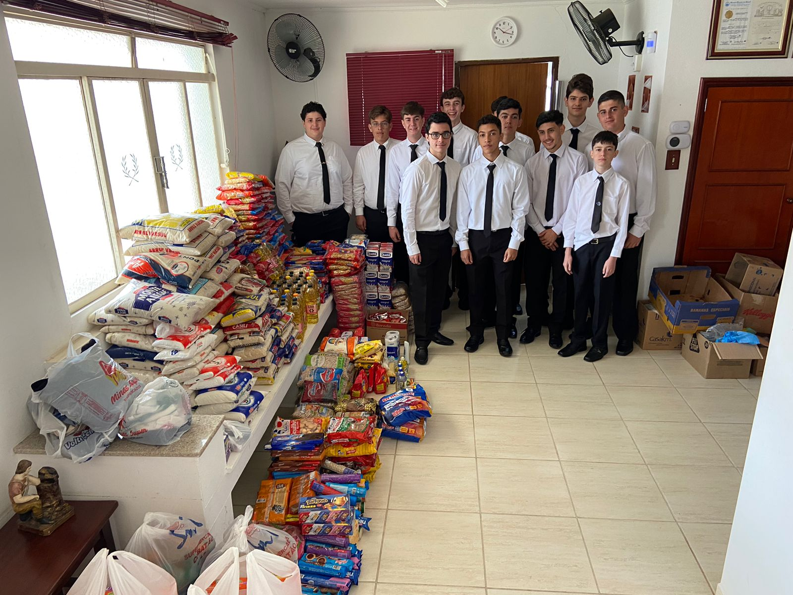

Últimas Notícias

Ação solidária de fim de ano do capítulo F.D.P
Membros da Ordem DeMolay arrecadaram alimentos para comunidades carentes.

Nova chapa toma posse do Gabinete Estadual
Cerimônia de posse reuniu jovens líderes e autoridades maçônicas.
Congresso Estadual da Ordem Demolay
Gabinete Estadual promove a instalação de novos capítulos no interior.